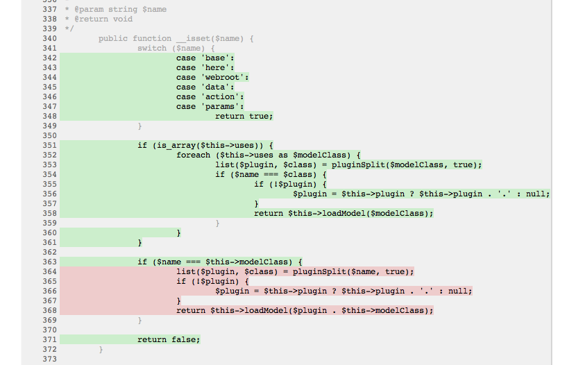

Testing
CakePHP comes with comprehensive testing support built-in. CakePHP comes with
integration for PHPUnit. In addition to the features
offered by PHPUnit, CakePHP offers some additional features to make testing
easier. This section will cover installing PHPUnit, and getting started with
Unit Testing, and how you can use the extensions that CakePHP offers.
Installing PHPUnit
CakePHP uses PHPUnit as its underlying test framework. PHPUnit is the de-facto
standard for unit testing in PHP. It offers a deep and powerful set of features
for making sure your code does what you think it does.
Install via Composer
The newer versions of PHPUnit do not currently work with cake:
"phpunit/phpunit": "3.7.38"
Install via .phar Package
You can also download the file directly. Just make sure you get the correct version from https://phar.phpunit.de/.
Make sure /usr/local/bin is in your php.ini file’s include_path:
wget https://phar.phpunit.de/phpunit-3.7.38.phar -O phpunit.phar
chmod +x phpunit.phar
mv phpunit.phar /usr/local/bin/phpunit
Note
PHPUnit 4 is not compatible with CakePHP’s Unit Testing.
Depending on your system’s configuration, you may need to run the previous
commands with sudo
Note
In CakePHP 2.5.7 and later you can place the phar directly in your vendors or App/Vendor directory.
Tip
All output is swallowed when using PHPUnit 3.6+. Add the --debug
modifier if using the CLI or add &debug=1 to the URL if using the web
runner to display output.
Test Database Setup
Remember to have a debug level of at least 1 in your app/Config/core.php
file before running any tests. Tests are not accessible via the web runner when
debug is equal to 0. Before running any tests you should be sure to add a
$test database configuration. This configuration is used by CakePHP for
fixture tables and data:
public $test = array(
'datasource' => 'Database/Mysql',
'persistent' => false,
'host' => 'dbhost',
'login' => 'dblogin',
'password' => 'dbpassword',
'database' => 'test_database'
);
Note
It’s a good idea to make the test database and your actual database
different databases. This will prevent any embarrassing mistakes later.
Checking the Test Setup
After installing PHPUnit and setting up your $test database configuration
you can make sure you’re ready to write and run your own tests by running one of
the core tests. There are two built-in runners for testing, we’ll start off by
using the web runner. The tests can then be accessed by browsing to
http://localhost/your_app/test.php. You should see a list of the core test
cases. Click on the ‘AllConfigure’ test. You should see a green bar with some
additional information about the tests run, and number passed.
Congratulations, you are now ready to start writing tests!
Test Case Conventions
Like most things in CakePHP, test cases have some conventions. Concerning
tests:
- PHP files containing tests should be in your
app/Test/Case/[Type] directories.
- The filenames of these files should end in
Test.php instead
of just .php.
- The classes containing tests should extend
CakeTestCase,
ControllerTestCase or PHPUnit_Framework_TestCase.
- Like other class names, the test case class names should match the filename.
RouterTest.php should contain class RouterTest extends CakeTestCase.
- The name of any method containing a test (i.e. containing an
assertion) should begin with
test, as in testPublished().
You can also use the @test annotation to mark methods as test methods.
When you have created a test case, you can execute it by browsing
to http://localhost/your_app/test.php (depending on
how your specific setup looks). Click App test cases, and
then click the link to your specific file. You can run tests from the command
line using the test shell:
./Console/cake test app Model/Post
For example, would run the tests for your Post model.
Creating Your First Test Case
In the following example, we’ll create a test case for a very simple helper
method. The helper we’re going to test will be formatting progress bar HTML.
Our helper looks like:
class ProgressHelper extends AppHelper {
public function bar($value) {
$width = round($value / 100, 2) * 100;
return sprintf(
'<div class="progress-container">
<div class="progress-bar" style="width: %s%%"></div>
</div>', $width);
}
}
This is a very simple example, but it will be useful to show how you can create
a simple test case. After creating and saving our helper, we’ll create the test
case file in app/Test/Case/View/Helper/ProgressHelperTest.php. In that file
we’ll start with the following:
App::uses('Controller', 'Controller');
App::uses('View', 'View');
App::uses('ProgressHelper', 'View/Helper');
class ProgressHelperTest extends CakeTestCase {
public function setUp() {
}
public function testBar() {
}
}
We’ll flesh out this skeleton in a minute. We’ve added two methods to start
with. First is setUp(). This method is called before every test method
in a test case class. Setup methods should initialize the objects needed for the
test, and do any configuration needed. In our setup method we’ll add the
following:
public function setUp() {
parent::setUp();
$Controller = new Controller();
$View = new View($Controller);
$this->Progress = new ProgressHelper($View);
}
Calling the parent method is important in test cases, as CakeTestCase::setUp()
does a number of things like backing up the values in Configure and,
storing the paths in App.
Next, we’ll fill out the test method. We’ll use some assertions to ensure that
our code creates the output we expect:
public function testBar() {
$result = $this->Progress->bar(90);
$this->assertContains('width: 90%', $result);
$this->assertContains('progress-bar', $result);
$result = $this->Progress->bar(33.3333333);
$this->assertContains('width: 33%', $result);
}
The above test is a simple one but shows the potential benefit of using test
cases. We use assertContains() to ensure that our helper is returning a
string that contains the content we expect. If the result did not contain the
expected content the test would fail, and we would know that our code is
incorrect.
By using test cases you can easily describe the relationship between a set of
known inputs and their expected output. This helps you be more confident of the
code you’re writing as you can easily check that the code you wrote fulfills the
expectations and assertions your tests make. Additionally because tests are
code, they are easy to re-run whenever you make a change. This helps prevent
the creation of new bugs.
Running Tests
Once you have PHPUnit installed and some test cases written, you’ll want to run
the test cases very frequently. It’s a good idea to run tests before committing
any changes to help ensure you haven’t broken anything.
Running tests from a browser
CakePHP provides a web interface for running tests, so you can execute your
tests through a browser if you’re more comfortable in that environment. You can
access the web runner by going to http://localhost/your_app/test.php. The
exact location of test.php will change depending on your setup. But the file is
at the same level as index.php.
Once you’ve loaded up the test runner, you can navigate App, Core and Plugin
test suites. Clicking an individual test case will run that test and display the
results.
Viewing code coverage
If you have Xdebug installed, you can view code coverage
results. Code coverage is useful for telling you what parts of your code your
tests do not reach. Coverage is useful for determining where you should add
tests in the future, and gives you one measurement to track your testing
progress with.

The inline code coverage uses green lines to indicate lines that have been run.
If you hover over a green line a tooltip will indicate which tests covered the
line. Lines in red did not run, and have not been exercised by your tests. Grey
lines are considered unexecutable code by Xdebug.
Running tests from command line
CakePHP provides a test shell for running tests. You can run app, core and
plugin tests easily using the test shell. It accepts all the arguments you would
expect to find on the normal PHPUnit command line tool as well. From your app
directory you can do the following to run tests:
# Run a model tests in the app
./Console/cake test app Model/Article
# Run a component test in a plugin
./Console/cake test DebugKit Controller/Component/ToolbarComponent
# Run the configure class test in CakePHP
./Console/cake test core Core/Configure
Note
If you are running tests that interact with the session it’s generally a
good idea to use the --stderr option. This will fix issues with tests
failing because of headers_sent warnings.
Changed in version 2.1: The test shell was added in 2.1. The 2.0 testsuite shell is still
available but the new syntax is preferred.
You can also run test shell in the project root directory. This shows you a
full list of all the tests that you currently have. You can then freely choose
what test(s) to run:
# Run test in project root directory for application folder called app
lib/Cake/Console/cake test app
# Run test in project root directory for an application in ./myapp
lib/Cake/Console/cake test --app myapp app
Filtering test cases
When you have larger test cases, you will often want to run a subset of the test
methods when you are trying to work on a single failing case. With the CLI
runner you can use an option to filter test methods:
./Console/cake test core Console/ConsoleOutput --filter testWriteArray
The filter parameter is used as a case-sensitive regular expression for filtering
which test methods to run.
Generating code coverage
You can generate code coverage reports from the command line using PHPUnit’s
built-in code coverage tools. PHPUnit will generate a set of static HTML files
containing the coverage results. You can generate coverage for a test case by
doing the following:
./Console/cake test app Model/Article --coverage-html webroot/coverage
This will put the coverage results in your application’s webroot directory. You
should be able to view the results by going to
http://localhost/your_app/coverage.
Running tests that use sessions
When running tests on the command line that use sessions you’ll need to include
the --stderr flag. Failing to do so will cause sessions to not work.
PHPUnit outputs test progress to stdout by default, this causes PHP to assume
that headers have been sent which prevents sessions from starting. By switching
PHPUnit to output on stderr, this issue is avoided.
Test Case Lifecycle Callbacks
Test cases have a number of lifecycle callbacks you can use when doing testing:
setUp is called before every test method. Should be used to create the
objects that are going to be tested, and initialize any data for the test.
Always remember to call parent::setUp()tearDown is called after every test method. Should be used to cleanup after
the test is complete. Always remember to call parent::tearDown().setupBeforeClass is called once before test methods in a case are started.
This method must be static.tearDownAfterClass is called once after test methods in a case are started.
This method must be static.
Fixtures
When testing code that depends on models and the database, one can use
fixtures as a way to generate temporary data tables loaded with sample data
that can be used by the test. The benefit of using fixtures is that your test
has no chance of disrupting live application data. In addition, you can begin
testing your code prior to actually developing live content for an application.
CakePHP uses the connection named $test in your app/Config/database.php
configuration file. If this connection is not usable, an exception will be
raised and you will not be able to use database fixtures.
CakePHP performs the following during the course of a fixture based test case:
- Creates tables for each of the fixtures needed.
- Populates tables with data, if data is provided in fixture.
- Runs test methods.
- Empties the fixture tables.
- Removes fixture tables from database.
Creating fixtures
When creating a fixture you will mainly define two things: how the table is
created (which fields are part of the table), and which records will be
initially populated to the table. Let’s create our first fixture, that will be
used to test our own Article model. Create a file named ArticleFixture.php
in your app/Test/Fixture directory, with the following content:
class ArticleFixture extends CakeTestFixture {
// Optional.
// Set this property to load fixtures to a different test datasource
public $useDbConfig = 'test';
public $fields = array(
'id' => array('type' => 'integer', 'key' => 'primary'),
'title' => array(
'type' => 'string',
'length' => 255,
'null' => false
),
'body' => 'text',
'published' => array(
'type' => 'integer',
'default' => '0',
'null' => false
),
'created' => 'datetime',
'updated' => 'datetime'
);
public $records = array(
array(
'id' => 1,
'title' => 'First Article',
'body' => 'First Article Body',
'published' => '1',
'created' => '2007-03-18 10:39:23',
'updated' => '2007-03-18 10:41:31'
),
array(
'id' => 2,
'title' => 'Second Article',
'body' => 'Second Article Body',
'published' => '1',
'created' => '2007-03-18 10:41:23',
'updated' => '2007-03-18 10:43:31'
),
array(
'id' => 3,
'title' => 'Third Article',
'body' => 'Third Article Body',
'published' => '1',
'created' => '2007-03-18 10:43:23',
'updated' => '2007-03-18 10:45:31'
)
);
}
The $useDbConfig property defines the datasource of which the fixture will
use. If your application uses multiple datasources, you should make the
fixtures match the model’s datasources but prefixed with test_.
For example if your model uses the mydb datasource, your fixture should use
the test_mydb datasource. If the test_mydb connection doesn’t exist,
your models will use the default test datasource. Fixture datasources must
be prefixed with test to reduce the possibility of accidentally truncating
all your application’s data when running tests.
We use $fields to specify which fields will be part of this table, and how
they are defined. The format used to define these fields is the same used with
CakeSchema. The keys available for table definition are:
type
- CakePHP internal data type. Currently supported:
string: maps to VARCHARtext: maps to TEXTbiginteger: maps to BIGINTinteger: maps to INTfloat: maps to FLOATdecimal: maps to DECIMALdatetime: maps to DATETIMEtimestamp: maps to TIMESTAMPtime: maps to TIMEdate: maps to DATEbinary: maps to BLOBboolean: maps to TINYINT
key- Set to
primary to make the field AUTO_INCREMENT, and a PRIMARY KEY
for the table.
length- Set to the specific length the field should take.
null- Set to either
true (to allow NULLs) or false (to disallow NULLs).
default- Default value the field takes.
We can define a set of records that will be populated after the fixture table is
created. The format is fairly straight forward, $records is an array of
records. Each item in $records should be a single row. Inside each row,
should be an associative array of the columns and values for the row. Just keep
in mind that each record in the $records array must have a key for every
field specified in the $fields array. If a field for a particular record
needs to have a null value, just specify the value of that key as null.
Dynamic data and fixtures
Since records for a fixture are declared as a class property, you cannot easily
use functions or other dynamic data to define fixtures. To solve this problem,
you can define $records in the init() function of your fixture. For example
if you wanted all the created and updated timestamps to reflect today’s date you
could do the following:
class ArticleFixture extends CakeTestFixture {
public $fields = array(
'id' => array('type' => 'integer', 'key' => 'primary'),
'title' => array('type' => 'string', 'length' => 255, 'null' => false),
'body' => 'text',
'published' => array('type' => 'integer', 'default' => '0', 'null' => false),
'created' => 'datetime',
'updated' => 'datetime'
);
public function init() {
$this->records = array(
array(
'id' => 1,
'title' => 'First Article',
'body' => 'First Article Body',
'published' => '1',
'created' => date('Y-m-d H:i:s'),
'updated' => date('Y-m-d H:i:s'),
),
);
parent::init();
}
}
When overriding init() just remember to always call parent::init().
Note
Please note that fixtures in 2.x do not handle foreign key constraints.
Loading fixtures in your test cases
After you’ve created your fixtures, you’ll want to use them in your test cases.
In each test case you should load the fixtures you will need. You should load a
fixture for every model that will have a query run against it. To load fixtures
you define the $fixtures property in your model:
class ArticleTest extends CakeTestCase {
public $fixtures = array('app.article', 'app.comment');
}
The above will load the Article and Comment fixtures from the application’s
Fixture directory. You can also load fixtures from CakePHP core, or plugins:
class ArticleTest extends CakeTestCase {
public $fixtures = array('plugin.debug_kit.article', 'core.comment');
}
Using the core prefix will load fixtures from CakePHP, and using a plugin
name as the prefix, will load the fixture from the named plugin.
You can control when your fixtures are loaded by setting
CakeTestCase::$autoFixtures to false and later load them using
CakeTestCase::loadFixtures():
class ArticleTest extends CakeTestCase {
public $fixtures = array('app.article', 'app.comment');
public $autoFixtures = false;
public function testMyFunction() {
$this->loadFixtures('Article', 'Comment');
}
}
As of 2.5.0, you can load fixtures in subdirectories. Using multiple directories
can make it easier to organize your fixtures if you have a larger application.
To load fixtures in subdirectories, simply include the subdirectory name in the
fixture name:
class ArticleTest extends CakeTestCase {
public $fixtures = array('app.blog/article', 'app.blog/comment');
}
In the above example, both fixtures would be loaded from
App/Test/Fixture/blog/.
Changed in version 2.5: As of 2.5.0 you can load fixtures in subdirectories.
Testing Models
Let’s say we already have our Article model defined on
app/Model/Article.php, which looks like this:
class Article extends AppModel {
public function published($fields = null) {
$params = array(
'conditions' => array(
$this->name . '.published' => 1
),
'fields' => $fields
);
return $this->find('all', $params);
}
}
We now want to set up a test that will use this model definition, but through
fixtures, to test some functionality in the model. CakePHP test suite loads a
very minimum set of files (to keep tests isolated), so we have to start by
loading our model - in this case the Article model which we already defined.
Let’s now create a file named ArticleTest.php in your
app/Test/Case/Model directory, with the following contents:
App::uses('Article', 'Model');
class ArticleTest extends CakeTestCase {
public $fixtures = array('app.article');
}
In our test cases’ variable $fixtures we define the set of fixtures that
we’ll use. You should remember to include all the fixtures that will have
queries run against them.
Note
You can override the test model database by specifying the $useDbConfig
property. Ensure that the relevant fixture uses the same value so that the
table is created in the correct database.
Creating a test method
Let’s now add a method to test the function published() in the
Article model. Edit the file
app/Test/Case/Model/ArticleTest.php so it now looks like
this:
App::uses('Article', 'Model');
class ArticleTest extends CakeTestCase {
public $fixtures = array('app.article');
public function setUp() {
parent::setUp();
$this->Article = ClassRegistry::init('Article');
}
public function testPublished() {
$result = $this->Article->published(array('id', 'title'));
$expected = array(
array('Article' => array('id' => 1, 'title' => 'First Article')),
array('Article' => array('id' => 2, 'title' => 'Second Article')),
array('Article' => array('id' => 3, 'title' => 'Third Article'))
);
$this->assertEquals($expected, $result);
}
}
You can see we have added a method called testPublished(). We start by
creating an instance of our Article model, and then run our published()
method. In $expected we set what we expect should be the proper result (that
we know since we have defined which records are initially populated to the
article table.) We test that the result equals our expectation by using the
assertEquals method. See the Running Tests section for more
information on how to run your test case.
Note
When setting up your Model for testing be sure to use
ClassRegistry::init('YourModelName'); as it knows to use your test
database connection.
Mocking model methods
There will be times you’ll want to mock methods on models when testing them. You should
use getMockForModel to create testing mocks of models. It avoids issues
with reflected properties that normal mocks have:
public function testSendingEmails() {
$model = $this->getMockForModel('EmailVerification', array('send'));
$model->expects($this->once())
->method('send')
->will($this->returnValue(true));
$model->verifyEmail('test@example.com');
}
New in version 2.3: CakeTestCase::getMockForModel() was added in 2.3.
Testing Controllers
While you can test controller classes in a similar fashion to Helpers, Models,
and Components, CakePHP offers a specialized ControllerTestCase class.
Using this class as the base class for your controller test cases allows you to
use testAction() for simpler test cases. ControllerTestCase allows you
to easily mock out components and models, as well as potentially difficult to
test methods like redirect().
Say you have a typical Articles controller, and its corresponding
model. The controller code looks like:
App::uses('AppController', 'Controller');
class ArticlesController extends AppController {
public $helpers = array('Form', 'Html');
public function index($short = null) {
if (!empty($this->request->data)) {
$this->Article->save($this->request->data);
}
if (!empty($short)) {
$result = $this->Article->find('all', array('id', 'title'));
} else {
$result = $this->Article->find('all');
}
if (isset($this->params['requested'])) {
return $result;
}
$this->set('title', 'Articles');
$this->set('articles', $result);
}
}
Create a file named ArticlesControllerTest.php in your
app/Test/Case/Controller directory and put the following inside:
class ArticlesControllerTest extends ControllerTestCase {
public $fixtures = array('app.article');
public function testIndex() {
$result = $this->testAction('/articles/index');
debug($result);
}
public function testIndexShort() {
$result = $this->testAction('/articles/index/short');
debug($result);
}
public function testIndexShortGetRenderedHtml() {
$result = $this->testAction(
'/articles/index/short',
array('return' => 'contents')
);
debug($result);
}
public function testIndexShortGetViewVars() {
$result = $this->testAction(
'/articles/index/short',
array('return' => 'vars')
);
debug($result);
}
public function testIndexPostData() {
$data = array(
'Article' => array(
'user_id' => 1,
'published' => 1,
'slug' => 'new-article',
'title' => 'New Article',
'body' => 'New Body'
)
);
$result = $this->testAction(
'/articles/index',
array('data' => $data, 'method' => 'post')
);
debug($result);
}
}
This example shows a few of the ways you can use testAction to test your
controllers. The first parameter of testAction should always be the URL you
want to test. CakePHP will create a request and dispatch the controller and
action.
When testing actions that contain redirect() and other code following the
redirect it is generally a good idea to return when redirecting. The reason for
this, is that redirect() is mocked in testing, and does not exit like
normal. And instead of your code exiting, it will continue to run code following
the redirect. For example:
App::uses('AppController', 'Controller');
class ArticlesController extends AppController {
public function add() {
if ($this->request->is('post')) {
if ($this->Article->save($this->request->data)) {
$this->redirect(array('action' => 'index'));
}
}
// more code
}
}
When testing the above code, you will still run // more code even when the
redirect is reached. Instead, you should write the code like:
App::uses('AppController', 'Controller');
class ArticlesController extends AppController {
public function add() {
if ($this->request->is('post')) {
if ($this->Article->save($this->request->data)) {
return $this->redirect(array('action' => 'index'));
}
}
// more code
}
}
In this case // more code will not be executed as the method will return
once the redirect is reached.
Simulating GET requests
As seen in the testIndexPostData() example above, you can use
testAction() to test POST actions as well as GET actions. By supplying the
data key, the request made to the controller will be POST. By default all
requests will be POST requests. You can simulate a GET request by setting the
method key:
public function testAdding() {
$data = array(
'Post' => array(
'title' => 'New post',
'body' => 'Secret sauce'
)
);
$this->testAction('/posts/add', array('data' => $data, 'method' => 'get'));
// some assertions.
}
The data key will be used as query string parameters when simulating a GET
request.
Choosing the return type
You can choose from a number of ways to inspect the success of your controller
action. Each offers a different way to ensure your code is doing what you
expect:
vars Get the set view variables.view Get the rendered view, without a layout.contents Get the rendered view including the layout.result Get the return value of the controller action. Useful
for testing requestAction methods.
The default value is result. As long as your return type is not result
you can also access the various other return types as properties in the test
case:
public function testIndex() {
$this->testAction('/posts/index');
$this->assertInternalType('array', $this->vars['posts']);
}
Using mocks with testAction
There will be times when you want to replace components or models with either
partially mocked objects or completely mocked objects. You can do this by using
ControllerTestCase::generate(). generate() takes the hard work
out of generating mocks on your controller. If you decide to generate a
controller to be used in testing, you can generate mocked versions of its models
and components along with it:
$Posts = $this->generate('Posts', array(
'methods' => array(
'isAuthorized'
),
'models' => array(
'Post' => array('save')
),
'components' => array(
'RequestHandler' => array('isPut'),
'Email' => array('send'),
'Session'
)
));
The above would create a mocked PostsController, stubbing out the isAuthorized
method. The attached Post model will have save() stubbed, and the attached
components would have their respective methods stubbed. You can choose to stub
an entire class by not passing methods to it, like Session in the example above.
Generated controllers are automatically used as the testing controller to test.
To enable automatic generation, set the autoMock variable on the test case to
true. If autoMock is false, your original controller will be used in the test.
The response object in the generated controller is always replaced with a mock
that does not send headers. After using generate() or testAction() you
can access the controller object at $this->controller.
A more complex example
In its simplest form, testAction() will run PostsController::index() on
your testing controller (or an automatically generated one), including all of the
mocked models and components. The results of the test are stored in the vars,
contents, view, and return properties. Also available is a headers
property which gives you access to the headers that would have been sent,
allowing you to check for redirects:
public function testAdd() {
$Posts = $this->generate('Posts', array(
'components' => array(
'Session',
'Email' => array('send')
)
));
$Posts->Session
->expects($this->once())
->method('setFlash');
$Posts->Email
->expects($this->once())
->method('send')
->will($this->returnValue(true));
$this->testAction('/posts/add', array(
'data' => array(
'Post' => array('title' => 'New Post')
)
));
$this->assertContains('/posts', $this->headers['Location']);
}
public function testAddGet() {
$this->testAction('/posts/add', array(
'method' => 'GET',
'return' => 'contents'
));
$this->assertRegExp('/<html/', $this->contents);
$this->assertRegExp('/<form/', $this->view);
}
This example shows a slightly more complex use of the testAction() and
generate() methods. First, we generate a testing controller and mock the
SessionComponent. Now that the SessionComponent is mocked, we have
the ability to run testing methods on it. Assuming PostsController::add()
redirects us to index, sends an email and sets a flash message, the test will
pass. A second test was added to do basic sanity testing when fetching the add
form. We check to see if the layout was loaded by checking the entire rendered
contents, and checks the view for a form tag. As you can see, your freedom to
test controllers and easily mock its classes is greatly expanded with these
changes.
When doing controller tests using mocks that use static methods you’ll have to
use a different method to register your mock expectations. For example if you
wanted to mock out AuthComponent::user() you’d have to do the
following:
public function testAdd() {
$Posts = $this->generate('Posts', array(
'components' => array(
'Session',
'Auth' => array('user')
)
));
$Posts->Auth->staticExpects($this->any())
->method('user')
->with('id')
->will($this->returnValue(2));
}
By using staticExpects you will be able to mock and manipulate static
methods on components and models.
Testing a JSON Responding Controller
JSON is a very friendly and common format to use when building a web service.
Testing the endpoints of your web service is very simple with CakePHP. Let us
begin with a simple example controller that responds in JSON:
class MarkersController extends AppController {
public $autoRender = false;
public function index() {
$data = $this->Marker->find('first');
$this->response->body(json_encode($data));
}
}
Now we create the file app/Test/Case/Controller/MarkersControllerTest.php
and make sure our web service is returning the proper response:
class MarkersControllerTest extends ControllerTestCase {
public function testIndex() {
$result = $this->testAction('/markers/index.json');
$result = json_decode($result, true);
$expected = array(
'Marker' => array('id' => 1, 'lng' => 66, 'lat' => 45),
);
$this->assertEquals($expected, $result);
}
}
Testing Views
Generally most applications will not directly test their HTML code. Doing so is
often results in fragile, difficult to maintain test suites that are prone to
breaking. When writing functional tests using ControllerTestCase
you can inspect the rendered view content by setting the return option to
‘view’. While it is possible to test view content using ControllerTestCase,
more robust and maintainable integration/view testing can be accomplished using
tools like Selenium webdriver.
Testing Components
Let’s pretend we have a component called PagematronComponent in our application.
This component helps us set the pagination limit value across all the
controllers that use it. Here is our example component located in
app/Controller/Component/PagematronComponent.php:
class PagematronComponent extends Component {
public $Controller = null;
public function startup(Controller $controller) {
parent::startup($controller);
$this->Controller = $controller;
// Make sure the controller is using pagination
if (!isset($this->Controller->paginate)) {
$this->Controller->paginate = array();
}
}
public function adjust($length = 'short') {
switch ($length) {
case 'long':
$this->Controller->paginate['limit'] = 100;
break;
case 'medium':
$this->Controller->paginate['limit'] = 50;
break;
default:
$this->Controller->paginate['limit'] = 20;
break;
}
}
}
Now we can write tests to ensure our paginate limit parameter is being
set correctly by the adjust method in our component. We create the file
app/Test/Case/Controller/Component/PagematronComponentTest.php:
App::uses('Controller', 'Controller');
App::uses('CakeRequest', 'Network');
App::uses('CakeResponse', 'Network');
App::uses('ComponentCollection', 'Controller');
App::uses('PagematronComponent', 'Controller/Component');
// A fake controller to test against
class PagematronControllerTest extends Controller {
public $paginate = null;
}
class PagematronComponentTest extends CakeTestCase {
public $PagematronComponent = null;
public $Controller = null;
public function setUp() {
parent::setUp();
// Setup our component and fake test controller
$Collection = new ComponentCollection();
$this->PagematronComponent = new PagematronComponent($Collection);
$CakeRequest = new CakeRequest();
$CakeResponse = new CakeResponse();
$this->Controller = new PagematronControllerTest($CakeRequest, $CakeResponse);
$this->PagematronComponent->startup($this->Controller);
}
public function testAdjust() {
// Test our adjust method with different parameter settings
$this->PagematronComponent->adjust();
$this->assertEquals(20, $this->Controller->paginate['limit']);
$this->PagematronComponent->adjust('medium');
$this->assertEquals(50, $this->Controller->paginate['limit']);
$this->PagematronComponent->adjust('long');
$this->assertEquals(100, $this->Controller->paginate['limit']);
}
public function tearDown() {
parent::tearDown();
// Clean up after we're done
unset($this->PagematronComponent);
unset($this->Controller);
}
}
Testing Helpers
Since a decent amount of logic resides in Helper classes, it’s
important to make sure those classes are covered by test cases.
First we create an example helper to test. The CurrencyRendererHelper will
help us display currencies in our views and for simplicity only has one method
usd().
// app/View/Helper/CurrencyRendererHelper.php
class CurrencyRendererHelper extends AppHelper {
public function usd($amount) {
return 'USD ' . number_format($amount, 2, '.', ',');
}
}
Here we set the decimal places to 2, decimal separator to dot, thousands
separator to comma, and prefix the formatted number with ‘USD’ string.
Now we create our tests:
// app/Test/Case/View/Helper/CurrencyRendererHelperTest.php
App::uses('Controller', 'Controller');
App::uses('View', 'View');
App::uses('CurrencyRendererHelper', 'View/Helper');
class CurrencyRendererHelperTest extends CakeTestCase {
public $CurrencyRenderer = null;
// Here we instantiate our helper
public function setUp() {
parent::setUp();
$Controller = new Controller();
$View = new View($Controller);
$this->CurrencyRenderer = new CurrencyRendererHelper($View);
}
// Testing the usd() function
public function testUsd() {
$this->assertEquals('USD 5.30', $this->CurrencyRenderer->usd(5.30));
// We should always have 2 decimal digits
$this->assertEquals('USD 1.00', $this->CurrencyRenderer->usd(1));
$this->assertEquals('USD 2.05', $this->CurrencyRenderer->usd(2.05));
// Testing the thousands separator
$this->assertEquals(
'USD 12,000.70',
$this->CurrencyRenderer->usd(12000.70)
);
}
}
Here, we call usd() with different parameters and tell the test suite to
check if the returned values are equal to what is expected.
Save this in and execute the test. You should see a green bar and messaging
indicating 1 pass and 4 assertions.
Creating Test Suites
If you want several of your tests to run at the same time, you can
create a test suite. A test suite is composed of several test cases.
CakeTestSuite offers a few methods for easily creating test suites based on
the file system. If we wanted to create a test suite for all our model tests we
would create app/Test/Case/AllModelTest.php. Put the following in it:
class AllModelTest extends CakeTestSuite {
public static function suite() {
$suite = new CakeTestSuite('All model tests');
$suite->addTestDirectory(TESTS . 'Case/Model');
return $suite;
}
}
The code above will group all test cases found in the
/app/Test/Case/Model/ folder. To add an individual file, use
$suite->addTestFile($filename);. You can recursively add a directory
for all tests using:
$suite->addTestDirectoryRecursive(TESTS . 'Case/Model');
Would recursively add all test cases in the app/Test/Case/Model
directory. You can use test suites to build a suite that runs all your
application’s tests:
class AllTestsTest extends CakeTestSuite {
public static function suite() {
$suite = new CakeTestSuite('All tests');
$suite->addTestDirectoryRecursive(TESTS . 'Case');
return $suite;
}
}
You can then run this test on the command line using:
$ Console/cake test app AllTests
Creating Tests for Plugins
Tests for plugins are created in their own directory inside the
plugins folder.
/app
/Plugin
/Blog
/Test
/Case
/Fixture
They work just like normal tests but you have to remember to use
the naming conventions for plugins when importing classes. This is
an example of a testcase for the BlogPost model from the plugins
chapter of this manual. A difference from other tests is in the
first line where ‘Blog.BlogPost’ is imported. You also need to
prefix your plugin fixtures with plugin.blog.blog_post:
App::uses('BlogPost', 'Blog.Model');
class BlogPostTest extends CakeTestCase {
// Plugin fixtures located in /app/Plugin/Blog/Test/Fixture/
public $fixtures = array('plugin.blog.blog_post');
public $BlogPost;
public function testSomething() {
// ClassRegistry makes the model use the test database connection
$this->BlogPost = ClassRegistry::init('Blog.BlogPost');
// do some useful test here
$this->assertTrue(is_object($this->BlogPost));
}
}
If you want to use plugin fixtures in the app tests you can
reference them using plugin.pluginName.fixtureName syntax in the
$fixtures array.
Integration with Jenkins
Jenkins is a continuous integration server, that can
help you automate the running of your test cases. This helps ensure that all
your tests stay passing and your application is always ready.
Integrating a CakePHP application with Jenkins is fairly straightforward. The
following assumes you’ve already installed Jenkins on *nix system, and are able
to administer it. You also know how to create jobs, and run builds. If you are
unsure of any of these, refer to the Jenkins documentation .
Create a job
Start off by creating a job for your application, and connect your repository
so that jenkins can access your code.
Add test database config
Using a separate database just for Jenkins is generally a good idea, as it stops
bleed through and avoids a number of basic problems. Once you’ve created a new
database in a database server that jenkins can access (usually localhost). Add
a shell script step to the build that contains the following:
cat > app/Config/database.php <<'DATABASE_PHP'
<?php
class DATABASE_CONFIG {
public $test = array(
'datasource' => 'Database/Mysql',
'host' => 'localhost',
'database' => 'jenkins_test',
'login' => 'jenkins',
'password' => 'cakephp_jenkins',
'encoding' => 'utf8'
);
}
DATABASE_PHP
This ensures that you’ll always have the correct database configuration that
Jenkins requires. Do the same for any other configuration files you need to.
It’s often a good idea to drop and re-create the database before each build as
well. This insulates you from chained failures, where one broken build causes
others to fail. Add another shell script step to the build that contains the
following:
mysql -u jenkins -pcakephp_jenkins -e 'DROP DATABASE IF EXISTS jenkins_test; CREATE DATABASE jenkins_test';
Add your tests
Add another shell script step to your build. In this step run the tests for
your application. Creating a junit log file, or clover coverage is often a nice
bonus, as it gives you a nice graphical view of your testing results:
app/Console/cake test app AllTests \
--stderr \
--log-junit junit.xml \
--coverage-clover clover.xml
If you use clover coverage, or the junit results, make sure to configure those
in Jenkins as well. Failing to configure those steps will mean you won’t see the
results.
Run a build
You should be able to run a build now. Check the console output and make any
necessary changes to get a passing build.